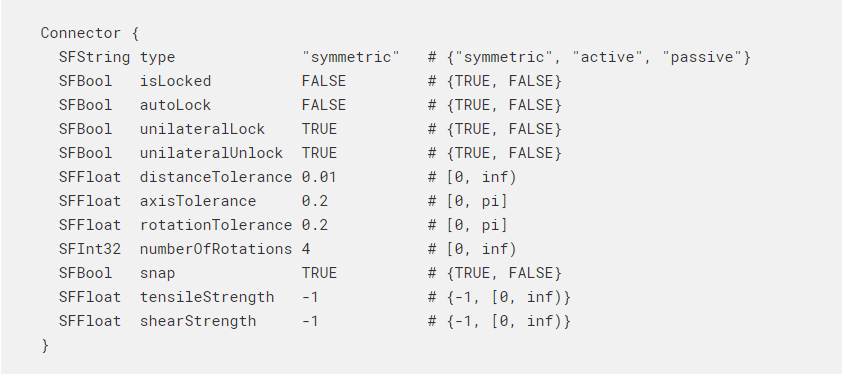
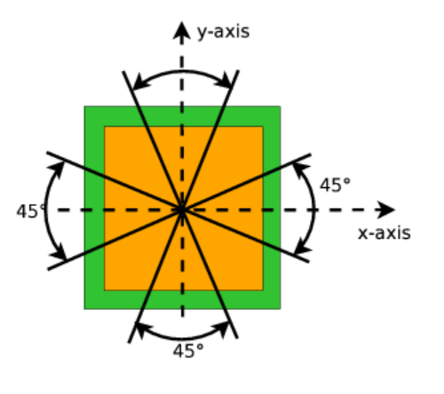

Brake 制動器 <<
Previous Next >> Display 顯示
Connector 連接器
連接器

Connector nodes are used to simulate mechanical docking systems, or any other type of device, that can dynamically create a physical link (or connection) with another device of the same type.
Connector nodes can only connect to other Connector nodes. At any time, each connection involves exactly two Connector nodes (peer to peer). The physical connection between two Connector nodes can be created and destroyed at run time by the robot's controller. The primary idea of Connector nodes is to enable the dynamic reconfiguration of modular robots, but more generally, Connector nodes can be used in any situation where solids need to be attached to other solids.
Connector nodes were designed to simulate various types of docking hardware:
- Mechanical links held in place by a latch.
- Gripping mechanisms.
- Magnetic links between permanent magnets (or electromagnets).
- Pneumatic suction systems, etc.
Connectors can be classified into two types, independent of the actual hardware system:
Symmetric connectors, where the two connecting faces are mechanically (and electrically) equivalent. In such cases both connectors are active.
Asymmetric connectors, where the two connecting interfaces are mechanically different. In asymmetric systems there is usually one active and one passive connector.
The detection of the presence of a peer Connector is based on simple distance and angle measurements, and therefore the Connector nodes are a computationally inexpensive way of simulating docking mechanisms.
連接器節點用於模擬機械對接系統或任何其他類型的設備，這些設備可以動態創建與另一個相同類型設備的物理鏈接（或連接）。
連接器節點只能連接到其他連接器節點。在任何時候，每個連接都恰好涉及兩個連接器節點（對等）。兩個連接器節點之間的物理連接可以在運行時由機器人的控制器創建和銷毀。連接器節點的主要思想是實現模塊化機械手的動態重新配置，但是更廣泛地說，連接器節點可用於需要將實體連接到其他實體的任何情況。
連接器節點旨在模擬各種類型的對接硬件：
機械鏈接由閂鎖固定在適當的位置。
抓緊機制。
永磁體（或電磁體）之間的磁鏈。
氣動吸風系統等
連接器可以分為兩種類型，與實際的硬件系統無關：
對稱連接器，其中兩個連接面在機械（和電氣）方面等效。在這種情況下，兩個連接器均處於活動狀態。
非對稱連接器，其中兩個連接接口在機械上是不同的。在非對稱系統中，通常有一個有源和一個無源連接器。
對等連接器是否存在的檢測基於簡單的距離和角度測量，因此，連接器節點是一種模擬對接機制的計算廉價方法。
Field Summary 領域摘要
-
型號(model): 指定連接器的型號。僅當兩個連接器節點的模型字符串相同時，它們才能連接。
-
類型(type):指定連接器的類型，必須為以下之一：“對稱”，“主動”或“被動”。 “對稱”連接器只能鎖定到另一個“對稱”連接器（並從中解鎖）。 “主動”連接器只能鎖定到“被動”連接器（並從中解鎖）。 “被動”連接器無法鎖定或解鎖（這對於屬於靜態環境的連接器特別有用）
-
鎖定(isLocked):表示連接器的鎖定狀態。 可以通過 wb_connector_lock 和wb_connector_unlock API函數更改鎖定狀態。 鎖定狀態表示鎖定硬件的當前狀態，它不表示兩個連接器之間是否存在實際的物理鏈接。 例如，根據硬件類型，isLocked可以表示關閉了機械閂鎖或機械手，已激活電磁體，已將永磁體移至吸引狀態或已激活了吸水泵等。 僅當存在兼容的對等方時（或連接器被自動鎖定時）調用wb_connector_lock函數時，實際的物理鏈接才存在。
-
自動鎖定(autoLock): 指定是啟用還是禁用自動鎖定。自動鎖定允許連接器在出現兼容對等方時自動鎖定。為了成功地自動鎖定，當對等方出現時，autoLock和isLocked字段都必須為TRUE，這意味著wb_connector_lock函數必須已被更早調用。 autoLock的一般想法是允許被動鎖定。許多彈簧安裝的閂鎖機構或磁性系統被動地鎖定其同級件。
-
單邊鎖定(unilateralLock): 表示僅鎖定一個對等方即可創建物理鏈接。對於要求雙方都處於鎖定狀態才能創建物理鏈接的系統，必須將該字段設置為FALSE。例如，使用旋轉磁鐵的對稱連接器屬於此類，因為兩個連接器必須同時處於磁性“吸引”狀態才能創建鏈接。請注意，對於“活動”連接器，此字段應始終為TRUE，否則對其將無法鎖定。
-
單邊解鎖(unilateralUnlock): 表示僅解鎖一個對等體就足以破壞物理鏈路。對於要求雙方都處於解鎖狀態才能斷開物理鏈接的系統，必須將該字段設置為FALSE。例如，連接器經常使用雙向閂鎖機制，並且每一側都必須釋放自己的閂鎖，以使鏈接斷開。請注意，對於“活動”連接器，此字段應始終為TRUE，否則它們將無法解鎖。
-
距離公差(distanceTolerance): 兩個連接器之間的最大距離[以米為單位]，仍然允許它們成功鎖定。在連接器坐標系的原點之間測量距離。
-
軸公差(axisTolerance):兩個連接器的Z軸之間可以成功鎖定的最大角度[弧度]。 當兩個連接器節點的Z軸平行（在公差範圍內）但指向相反時，它們可以鎖定。
-
旋轉公差(rotationTolerance): 相對於每個允許的對接旋轉的公差角度差（請參見下圖）。

-
旋轉數值(numberOfRotations): 指定在圍繞連接器的z軸完整360度旋轉中允許多少個不同的對接旋轉。 例如，根據機械和電氣接口的不同，模塊化機器人的連接器通常可進行1、2或4路對接。 如該圖所示，如果numberOfRotations為4，則將有4個不同的對接位置（每90度一個）。 如果您不想檢查旋轉對齊標準，則該字段應設置為零。
筆記: 對於autoLock，distanceTolerance，axisTolerance，rotationTolerance和numberOfRotations等字段，在其他連接器中的這些字段的值並不重要，因每個連接器將獨立檢查其是否滿足條件。
-
拉伸(snap): 當為TRUE時：兩個連接器對接時會自動對齊（對齊，調整等）。對齊方式有三點：1）旋轉兩個物體，使其z軸平行（但指向相反的方向），2）旋轉兩個物體，以使其y軸與可能的旋轉對接位置之一匹配， 3）兩個物體相互靠近，以使其坐標系的原點匹配。請注意，當numberOfRotations字段為0時，將省略步驟2，因此旋轉對齊保持自由。作為步驟1和3的結果，連接器表面始終會重疊。建議為兩個連接器設置相同的捕捉值。
-
抗拉強度(tensileStrength): 對接機構在斷裂之前可以承受的最大牛頓[N]拉伸力。這可以用來模擬對接機構的破裂。拉力對應於將兩個連接器拉開的力（沿負Z軸方向）。當拉伸力超過拉伸強度時，連桿斷裂。請注意，如果兩個連接器均被鎖定，則有效抗拉強度將對應於兩個連接器的抗張強度字段的總和。默認值-1表示無限強大的對接機制，無論施加多大的力都不會斷開（如果兩個連接器均被鎖定，則將其中一個連接器的抗張強度字段設置為-1就足夠了）。
-
抗剪強度shearStrength: 表示對接機構在破裂前可以承受的最大牛頓[N]剪切力。 這可以用來模擬對接機構的破裂。 shearStrength字段指定兩個連接器承受力的能力，該力會使它們在相反的方向（在xy平面中）彼此相對滑動。 請注意，如果兩個連接器均被鎖定，則有效抗剪強度對應於兩個連接器的shearStrength字段的總和。 默認值-1表示無限強的對接機制，無論施加多大的力都不會斷開（如果兩個連接器均被鎖定，則將其中一個連接器的shearStrength字段設置為-1就足夠了）。
Brake 制動器 <<
Previous Next >> Display 顯示